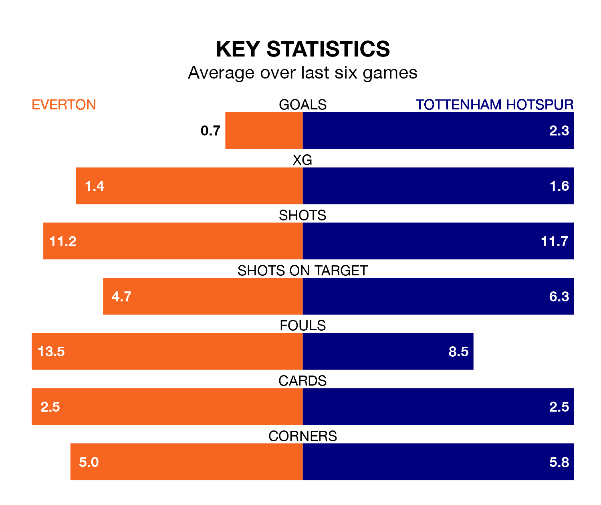

Tottenham Hotspur face a challenge to maintain their high-scoring form away against a tight Everton defence on Saturday.
With 47 goals in 22 games, Spurs are the third-highest scorers in the Premier League ahead of the 12.30pm kick-off at Goodison Park.
They face a Toffees side who have scored 24 in 22 matches, but conceded only 28 goals, putting them fourth among the league's tightest defences – only Liverpool, Manchester City and Arsenal have conceded fewer goals.
In Jordan Pickford, Everton can rely on one of the league's safest pair of hands. He has kept eight clean sheets in his 22 appearances this season, and no 'keeper has prevented the opposition scoring more often in the Premier League.
In Spurs's net, Guglielmo Vicario has five clean sheets in 22 games.
In the last 10 years, Everton and Spurs have played each other on 21 occasions. Everton won two of them, Spurs 11, and they drew eight times.
On average, the Toffees scored 1.0 goals and Spurs 2.0 in those matches.
Their last meeting was on December 23, when Spurs won 2-1 at home.
Tottenham are fifth in the table after 22 games, of which they have won 13 and drawn four, earning 43 points.
The Toffees are seven places behind the visitors in 12th, with eight wins and four draws putting them on 28 points.
The home team are in disappointing form in the Premier League, with one win and two draws from their last six games.
With four wins and a draw over that period, Spurs's form is much better – they have taken 13 points from 18, compared to Everton's five.
Everton's last match was on Tuesday, a 0-0 draw against Fulham.
Spurs beat Brentford 3-2 last time out, on Wednesday, with Destiny Udogie and Richarlison on the scoresheet.
Saturday's match will be refereed by Michael Oliver, who has taken charge of 13 Premier League games so far this season, issuing four red cards and booking 54 players. He has awarded four penalties.
The last Everton game Oliver refereed was a 2-0 home win against Chelsea on December 10. His last Spurs match was their 4-1 loss at home against Chelsea on November 6.
Updated: 10:40 (UTC), 01/02/24